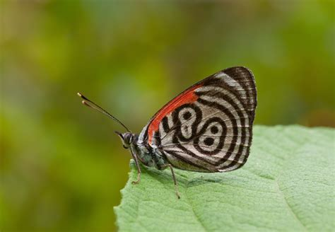

In this example, the image will float to the right in the text, and the text in the paragraph will wrap around the image.
 Butterflies are insects.A butterfly’s lifecycle is made up of four parts, egg, larva (caterpillars), pupa (chrysalis) and adult.Butterflies attach their eggs to leaves with a special glue.Most caterpillars are plant eaters (herbivores).Fully grown caterpillars attach themselves to a suitable twig or leaf before shedding their outside layer of skin to reveal a hard skin underneath known as a chrysalis.An adult butterfly will eventually emerge from the chrysalis where it will wait a few hours for its wings to fill with blood and dry, before flying for the first time.Butterflies can live in the adult stage from anywhere between a week and a year, depending on the species. Butterflies have four wings.Butterflies often have brightly coloured wings with unique patterns made up of tiny scales.Most butterflies feed on nectar from flowers.Butterflies have taste receptors on their feet.Scientists estimate that there are between 15000 and 20000 different species of butterfly.Birdwing butterflies have large, angular wings and fly in a similar way to birds. Monarch butterflies are known for their long migration.